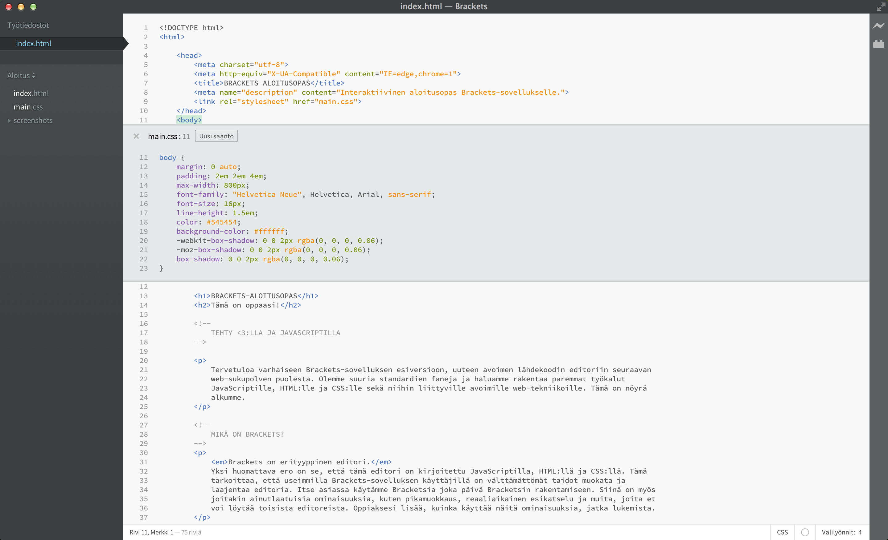

Tervetuloa käyttämään Bracketsia, nykyaikaista, avoimen lähdekoodin koodieditoria, joka ymmärtää web-suunnittelun. Se on kevyt mutta silti tehokas: koodieditori, joka sulauttaa visuaaliset työkalut suoraan editoriin, niin että saat oikean määrän apua silloin, kun haluat sitä.
Brackets on erityyppinen editori. Bracketsissa on joitakin ainutlaatuisia ominaisuuksia, kuten pikamuokkaus, reaaliaikainen esikatselu ja muita, joita et voi löytää muista editoreista. Lisäksi Brackets on kirjoitettu JavaSciptillä, HTML:llä ja CSS:llä. Se tarkoittaa, että useimmilla Bracketsin käyttäjistä on riittävät taidot muokata ja laajentaa editoria. Itse asiassa käytämme Bracketsia joka päivä sen itsensä kehitykseen. Oppiaksesi lisää siitä, kuinka käyttää avainominaisuuksia, jatka lukemista.
Muokataksesi omaa koodiasi Bracketsia käyttäen voit vain avata tiedostosi sisältävän kansion. Brackets pitää nykyistä avointa kansiota ”projektina”; ominaisuudet, kuten koodivihjeet, esikatselu ja pikamuokkaus, käyttävät vain parhaillaan avoinna olevan kansion tiedostoja.
Heti kun olet valmis luopumaan tästä näyteprojektista ja muokkaamaan omaa koodiasi, voit käyttää vasemman sivupalkin pudotusvalikkoa kansioiden vaihtamiseen. Juuri nyt pudotusvalikossa lukee ”Aloitus”. Tämä on kansio, joka sisältää tiedoston, jota tarkastelet juuri nyt. Avaa oma kansiosi napsauttamalla pudotusvalikkoa ja valitsemalla ”Avaa kansio…”. Voit käyttää pudotusvalikkoa myös myöhemmin vaihtaaksesi takaisin kansioihin, jotka olet avannut aiemmin, sisältäen tämän näyteprojektin.Ei lisää dokumenttien välillä vaihtamista tai asiayhteyden hukkaamista. Muokatessasi HTML:ää käytä näppäinyhdistelmää Cmd/Ctrl + E avataksesi upotetun pikaeditorin, joka näyttää kaiken tiedostoon liittyvän CSS:n. Muokkaa CSS:ääsi, paina ESC-näppäintä ja olet taas muokkaamassa HTML:ää, tai yksinkertaisesti jätä CSS-säännöt auki, ja niistä tulee osa HTML-editoriasi. Jos painat ESC-näppäintä pikaeditorin ulkopuolella, ne kaikki sulkeutuvat. Pikaeditori löytää myös LESS- ja SCSS-tiedostoissa määritellyt säännöt, sisältäen sisäkkäiset sellaiset.
Haluatko nähdä sen toiminnassa? Aseta kohdistin alla olevaan -tägiin ja paina Cmd/Ctrl + E. Sinun pitäisi nähdä, kun CSS-pikaeditori ilmestyy alapuolelle näyttäen CSS-säännön, joka pätee siihen. Pikamuokkaus toimii toki myös class- ja id-attribuuttien kanssa. Voit käyttää sitä myös LESS- ja SCSS-tiedostojesi kanssa. Voit luoda uusia sääntöjä samalla tavalla. Napsauta yhtä alaosan -tägeistä ja paina Cmd/Ctrl + E. Sille ei ole sääntöjä juuri nyt, mutta voit napsauttaa Uusi sääntö -painiketta lisätäksesi uuden säännön -tägeille. Voit käyttää samaa näppäinyhdistelmää muokataksesi myös muita asioita - kuten JavaScriptin funktioita, värejä ja animaatioiden ajoitusfunktioita - ja me lisäämme koko ajan yhä enemmän ominaisuuksia.
Toistaiseksi sisäeditorit eivät voi olla sisäkkäin, joten voit käyttää pikamuokkausta vain silloin, kun kohdistin on täyskokoisessa editorissa.
Tiedäthän sen ”tallenna ja päivitä -tanssin”, jota olemme harrastaneet vuosia? Se, jossa tehdään muutoksia editorissa, painetaan tallenna, vaihdetaan selaimeen ja sitten päivitetään, jotta tulos tulee viimein näkyville? Bracketsissa sinun ei tarvitse harrastaa tätä tanssia.
Brackets avaa reaaliaikaisen yhteyden paikalliseen selaimeesi ja vie HTML:n CSS:n päivitykset samalla kun kirjoitat! Saatat olla jo tehnyt jotakin tämän kaltaista selainpohjaisilla työkaluilla, mutta Bracketsin kanssa ei tarvitse kopioida ja liittää lopullista koodia takaisin editoriin. Koodisi suoritetaan selaimessasi, mutta se sijaitsee editorissasi!
Brackets tekee helpoksi nähdä, kuinka muutoksesi HTML:ssä ja CSS:ssä vaikuttavat sivuun. Kun kohdistin on CSS-säännöllä, Brackets korostaa kaikki siihen liittyvät elementit selaimessa. Samalla tavoin muokattaessa HTML-tiedostoa Brackets korostaa vastaavat HTML-elementit selaimessa.
Jos sinulla on Google Chrome asennettuna, voit kokeilla tätä itse. Napsauta Brackets-ikkunan oikeassa yläkulmassa sijaitsevaa salamakuvaketta tai paina Cmd/Ctrl + Alt + P. Kun esikatselu on käytössä HTML-dokumentissa, kaikkia linkitettyjä CSS-dokumentteja voi muokata reaaliajassa. Kuvake muuttuu harmaasta kultaiseksi, kun Brackets muodostaa yhteyden selaimeesi. Aseta kohdistin nyt yläpuolella olevaan -tägiin. Huomaa sininen korostus, joka ilmestyy kuvan ympärille Chromessa. Käytä seuraavaksi Cmd/Ctrl + E -näppäinyhdistelmää avataksesi määritellyt CSS-säännöt. Yritä muuttaa reunaviivan kokoa arvosta 10px arvoon 20px tai vaihtaa taustaväriä arvosta ”transparent” arvoon ”hotpink”. Jos Brackets ja selain ovat näytölläsi vierekkäin, näet muutosten heijastuvan välittömästi selaimeesi. Siistiä, eikö?Nykyisellään Brackets tukee esikatselua vain HTML:lle ja CSS:lle. Kuitenkin jo nykyisessä versiossa muutokset JavaScript-tiedostoihin päivitetään automaattisesti tallentaessasi tiedoston. Työskentelemme parhaillaan esikatselun tuomiseksi JavaScriptille. Esikatselu on myös mahdollista vain Google Chromella, mutta toivomme pystyvämme tuomaan tämän toiminnon kaikille pääselaimille tulevaisuudessa.
Niille meistä, jotka eivät vielä osaa ulkoa värien vastineita HEX- tai RGB-arvoille, Brackets tekee nopeaksi ja helpoksi nähdä täsmälleen, mitä väriä on käyttämässä. Kerta kaikkiaan osoita mitä tahansa väriarvoa tai liukuväriä joko CSS:ssä tai HTML:ssä, ja Brackets näyttää esikatselun tästä väristä tai liukuväristä automaattisesti. Sama tulee kuviin: osoita yksinkertaisesti kuvalinkkiä Brackets-editorissa ja se näyttää pienen esikatselukuvan tästä kuvasta.
Kokeile pikanäkymää itse asettamalla kohdistimesi tämän dokumentin yläosassa sijaitsevaan -tägiin ja painalla Cmd/Ctrl + E avataksesi CSS-pikaeditorin. Nyt yksinkertaisesti osoita mitä tahansa CSS:n väriarvoista. Voit myös nähdä sen toiminnassa liukuväreissä avaamalla CSS-pikaeditorin -tägille ja osoittamalla mitä tahansa taustakuva-arvoista. Kokeile kuvan esikatselua asettamalla osoittimesi tässä dokumentissa aiemmin esiintyneen kuvankaappauskuvan päälle.Sen kaiken hyvän lisäksi, jota Bracketsiin on rakennettu, on suuri ja kasvava laajennuskehittäjien yhteisömme tehnyt satoja laajennuksia, jotka lisäävät hyödyllisiä toimintoja. Jos on jotakin, jota tarvitset ja jota Brackets ei tarjoa, enemmän kuin todennäköisesti joku on tehnyt laajennuksen siihen. Selaa saatavilla olevien laajennusten luetteloa tai hae siitä valitsemalla Tiedosto > Laajennusten hallinta ja napsauttamalla ”Saatavilla”-välilehteä. Kun löydät haluamasi laajennuksen, napsauta vain ”Asenna”-painiketta sen vierestä.
Brackets on avoimen lähdekoodin projekti. Web-kehittäjät ympäri maailmaa osallistuvat paremman koodieditorin kehittämiseen. Vieläkin enemmän kehitetään laajennuksia, jotka laajentavat Bracketsin kykyjä. Kerro meille, mitä ajattelet. Jaa ideasi tai osallistu suoraan projektiin.